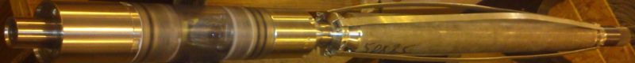
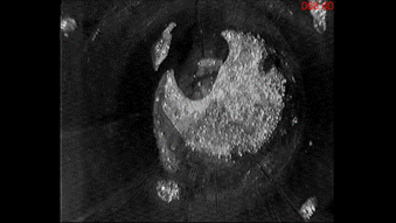
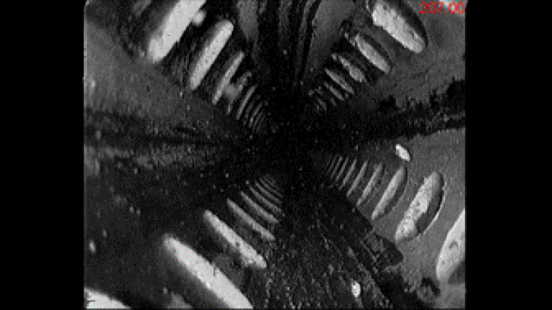
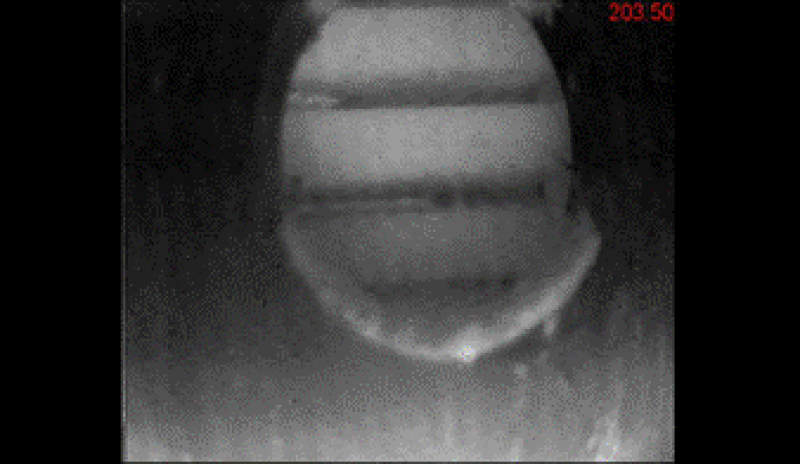
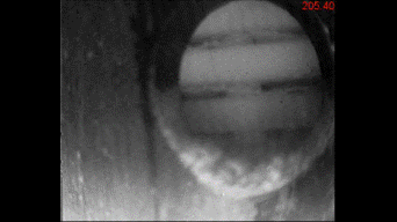

Техническое описание
ПРИБОР ВИЗУАЛЬНОГО КОНТРОЛЯ СКВАЖИН
«КП-512ВК»
Прибор визуального контроля скважин «КП-512ВК»предназначен для визуального контроля технического состояния эксплуатационных колонн, фильтров нагнетательных скважин и области забоя скважи. Прибор обеспечивает фронтальную или боковую видеосъемку скважины видеокамерами.
Прибор работает совместно с наземными каротажными регистраторами типа «Геофит – 1108», «Геофит-ВК1111»и «ВУЛКАН», или каротажной лабораторией «Геофит – 1003» через трехжильный геофизический кабель.

Перечень дефектов, обнаруживаемых видеосъемкой в процессе сдачи и эксплуатации скважины:
- смятие труб, трещины в колонне;
- отсутствие сальника между эксплутационной и фильтровой колоннами;
- деформация надфильтровой трубы;
- наличие песчаной пробки и зернистость материала;
- наличие заусенцев во внутренней части труб;
- наличие недоворота муфтовых соединений;
- качество сварных швов;
- состояние фильтров.
Кадры видеоизображения исследованных скважин:
- Фронтальная камера:


- Камера бокового обзора:


Технические характеристики прибора
1. Технические характеристики видеокамер прибора:
- эффективное число пикселей - 795(r) х596 (в),
- разрешающая способность - 600 телевизионных линий (твл),
- чувствительность - 0,1 лк,
- рабочая температура - -10 °С…+ 50 °С.
2. Со скважинного прибора видеосигналы по каротажному кабелю через наземный преобразователь видеосигналов ПВ1 из комплекта прибора передаются в наземный регистратор.
3. Параметры системы освещения прибора:
- фронтальная камера имеет четыре светодиода мощностью 4 Вт.
- боковая камера имеет одну светодиодную матрицу мощностью 3 Вт.
4. Боковая камера имеет возможность съемки в стационарном положении или при вращении влево или вправо с различной скоростью.
5. Питание скважинного прибора, выбор видеокамеры, скорость и направление вращения боковой видеокамеры осуществляются от наземного регистратора.
6. Напряжение постоянного тока питания прибора - (150 ± 10) В.
7. Условия работы прибора:
- максимальная температура окружающей среды -10 °С…+ 50 °С.
- наибольшее гидростатическое давление - 5 МПа.
8. Время непрерывной работы в условиях предельной температуры - 1 ч.
9. Габаритные размеры прибора:
- максимальный диаметр, мм - 54;
- максимальный размер раскрытия пружин, мм - 124
- длина без транспортных заглушек, мм -1101
- длина с транспортными заглушками, мм - 1134
10. Масса прибора, не более, кг - 10,6
11. Габаритные размеры Преобразователя видеосигналов ПВ1, мм - 125х85х40.
12. Масса Преобразователя видеосигналов ПВ1, кг - 0,1
13. Прибор рассчитан на применение стандартного трехжильного каротажного кабеля длиной до 600м.
14. Программное обеспечение, поставляемое с прибором, позволяет:
- проводить регистрацию данных прибора на персональный компьютер в функции глубины в формате *.avi с регулируемой степенью сжатия;
- управлять режимами прибора;
- проводить привязку изображения к глубине с точностью не хуже +/-0,1м;
- осуществлять просмотр и преобразование ранее сохраненных данных.
15. Прибор «КП-512ВК» рассчитан на эксплуатацию в условиях, соответствующих:
- по механическим воздействиям .................... группе МС2-3 по ГОСТ 26116-84;
- по климатическим параметрам ...................... группе КС4-1 по ГОСТ 26116-84.
16. Срок службы 3 года.
Прибор внедрен на предприятиях ГОСКОРПОРАЦИИ «РОСАТОМ» с 2014г.
Прибор имеет Декларацию о соответствии ЕВРОАЗИАТСКИЙ ЭКОНОМИЧЕСКИЙ СОЮЗ ЕАЭС N RU Д-RU.ГА05.В.03603/19
Разработчик – изготовитель: ООО «АСУ-ЭКСПЕРТ»,
634061, г. Томск, ул. Красноармейская, д. 51/1, оф.1
Зам. директора по геофизической аппаратуре Журиков С. А:
т/факс (382-2) 52-37-02; моб. +7 913-820-4176 E-mail: GurikovSA@asu-expert.ru